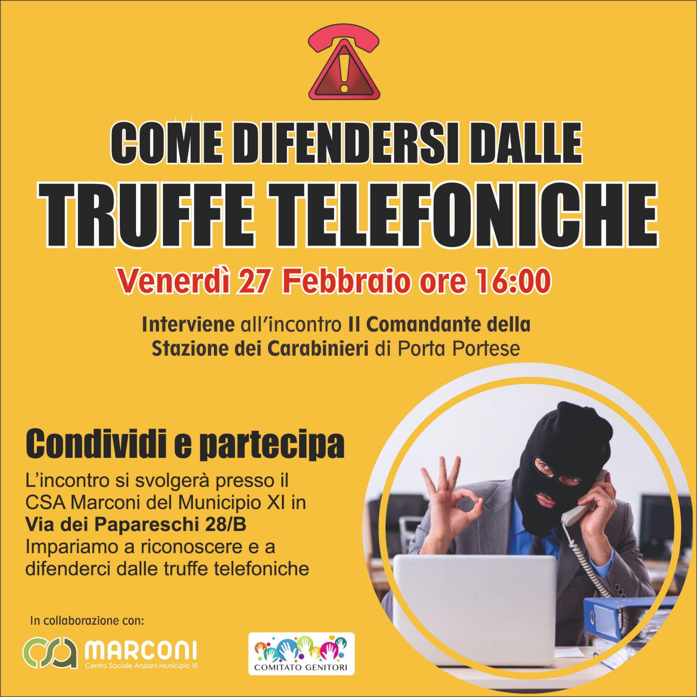

Comitato Genitori IC Bagnera
Uniti per il benessere e la crescita dei nostri figli
Uniti per il benessere e la crescita dei nostri figli

📍 Dove: CSA Marconi – Municipio XI, Via dei Papareschi 28/B, Roma
🕓 Quando: Venerdì 27 Febbraio 2026 alle ore 16:00
👮 Interviene: Il Comandante della Stazione dei Carabinieri di Porta Portese
Un incontro aperto a tutti per imparare a riconoscere e difendersi dalle truffe telefoniche, fenomeno sempre più diffuso che colpisce in particolare le persone anziane e le famiglie. Insieme al Comandante della Stazione dei Carabinieri di Porta Portese, scopriremo come funzionano le truffe più comuni e come proteggerci efficacemente.
Condividi e partecipa! Porta con te familiari, amici e vicini di casa: più siamo, più siamo al sicuro.